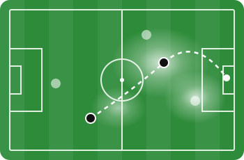
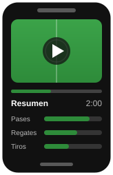

Resumen automático
Vídeo de 2 minutos por jugador con sus mejores jugadas. Listo para compartir en redes o enviar a ojeadores.
Grabación automática de partidos, resúmenes por jugador y estadísticas para clubes de categoría regional. Con una tarifa plana de 99 €/mes por equipo.


Al terminar cada partido, el jugador recibe su resumen en el móvil y el club accede a la grabación completa y a las estadísticas de su plantilla.
Vídeo de 2 minutos por jugador con sus mejores jugadas. Listo para compartir en redes o enviar a ojeadores.
Grabación íntegra del partido, disponible para el cuerpo técnico.
El estado real de cada proyecto.
Grabamos los partidos en casa de un club de Regional Preferente durante la primera vuelta. Probamos los resúmenes con 20 jugadores reales.
El entrenador consulta el partido completo, las estadísticas y los mapas de calor de su plantilla.
PWA instalable en el móvil. Cada jugador recibe su resumen y lo comparte en redes.
Desarrolla la plataforma web para clubes y la PWA para jugadores.
Ver ficha →Configura y mantiene las cámaras y la conectividad en los campos.
Ver ficha →El montaje físico de las cámaras lo realiza una empresa instaladora asociada, bajo la supervisión de Jose Ondo.
¿Quiere grabar los partidos de su equipo? Contacte con nosotros y le explicamos cómo funciona la instalación en su campo.